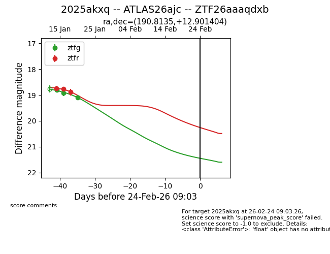
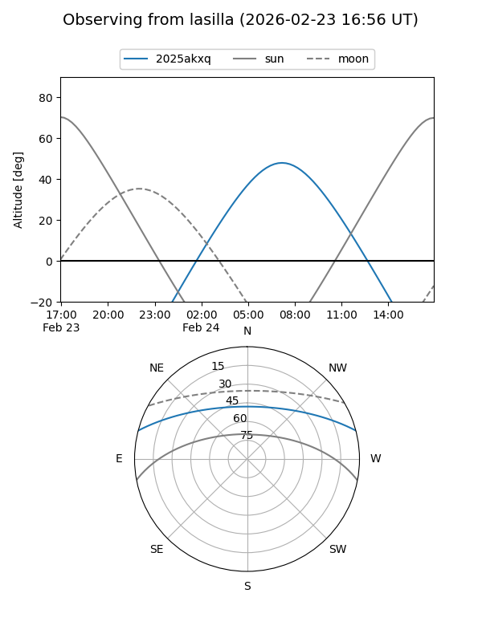
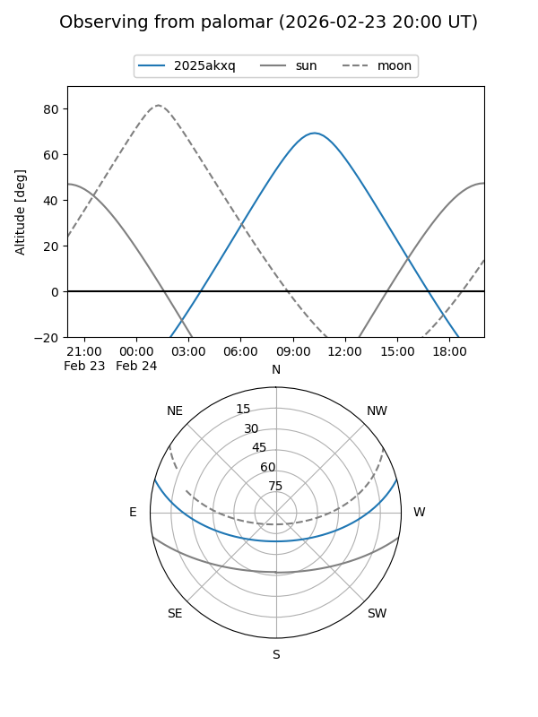
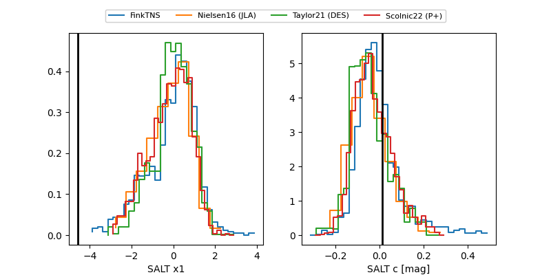

2025akxq
Target 2025akxq at 2026-01-23 02:41
Aliases and brokers:
FINK: link
Lasair: link
ALeRCE: link
TNS: link
YSE: link
alt names
ZTF26aaaqdxb (ztf,fink_ztf)
2025akxq (tns,yse)
ATLAS26ajc (atlas)
Coordinates:
equatorial (ra, dec) = 190.8135,+12.90140
equatorial (HMS+DMS) = 12:43:15.24,+12:54:05.05
galactic (l, b) = (294.8631,+75.64478)
Flags:
Photometry:
last ztfg=19.09, ztfr=18.89
3 ztfg, 3 ztfr detections
Lightcurve

Visibility


Additional plots
